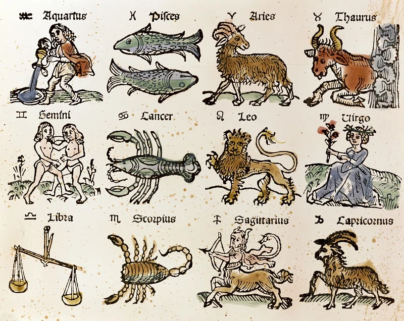

2 Project Planning
In this session we will begin the first project of the course: investigating personality differences between two groups of people. By the end of the session you will have a plan for your project.
Goals
- Identify the variables for your analysis
- Read some relevant research
- Articulate your hypothesis
Project overview
One way we can investigate personality is to look for differences between groups of people: does one group of people tend to score higher or lower on some particular trait than another group? With this project, you will look at whether a personality trait seems to differ (on average) between two different groups of people by analyzing an existing data set.
Specifically, for this project you will be comparing scores on one of the Big 5 personality traits: openness, conscientiousness, extraversion, agreeableness, or neuroticism.

What groups will you compare? We’re going to look for differences between people with different astrological starsigns (Pisces, Aries, Leo, Virgo, etc…). Why starsigns? Because it’s something a little bit fun that I expect you will be at least somewhat familiar with, and you’ll be able to come up with some idea about how people with one sign might differ from people with another sign (Leos will surely be more extraverted than Pisces, right?!). To be clear: astrology is not something that contemporary academic psychologists generally take very seriously. However, it makes for a fine introduction to ways of thinking about the reliability and validity of approaches to categorizing and describing personality, as well as constructing hypotheses and analyzing data.

Comparing groups: the \(t\)-test
The way we compare groups like this is to statistically test the “null hypothesis” (\(H_0\)) using a \(t\)-test. \(H_0\) states that there is no difference between the group averages at all. Because of the inherent randomness in sample data, however, we wouldn’t expect to find precisely no difference between two groups even if that null hypothesis is correct in reality. The \(t\)-test quantifies exactly how much our sample averages differ in the context of the general variability in the data. This gives a measure of how much of a difference we have observed over and above what we would expect by chance alone, assuming that there really isn’t a difference. If the difference between our samples is sufficiently big, we can say that it is sufficiently unlikely under the \(H_0\) model of reality; we reject \(H_0\) and tentatively accept the “alternative hypothesis”, (\(H_1\)) which states that there is a difference between the groups.
Note that this is a statistical statement about a general tendency, not a rigid law. If we reject the null hypothesis, we’re saying that there seems to be a difference in the groups averages, not that everyone in one group scores higher than everyone in the other group.
Note also that this kind of analysis, and all the empirical findings you learn about in the personality psychology lecture (and beyond) are the product of research and statistical procedures. Researchers decide what psychological constructs they want to investigate; how to measure those constructs; what statistical analyses are appropriate; and what conclusions may be drawn. There are strengths, limitations, and trade offs involved in every decision along the way.
Step 1. Examine the data
The dataset we will use is from the General Social Survey (GSS). Here’s a description from the GSS website:
The General Social Survey (GSS) is a nationally representative survey of adults in the United States conducted since 1972. The GSS collects data on contemporary American society in order to monitor and explain trends in opinions, attitudes and behaviors. The GSS has adapted questions from earlier surveys, thereby allowing researchers to conduct comparisons for up to 80 years.
The GSS contains a standard core of demographic, behavioral, and attitudinal questions, plus topics of special interest. Among the topics covered are civil liberties, crime and violence, intergroup tolerance, morality, national spending priorities, psychological well-being, social mobility, and stress and traumatic events.
Altogether, the GSS is the single best source for sociological and attitudinal trend data covering the United States. It allows researchers to examine the structure and functioning of society in general, as well as the role played by relevant subgroups and to compare the United States to other nations.
The GSS aims to make high-quality data easily accessible to scholars, students, policy-makers, and others, with minimal cost and waiting.
Specifically, for this project we will use data collected in 2006. The reason for using this (rather than more recent data) is that the 2006 survey included a personality scale: the Ten-Item Personality Inventory (TIPI: Gosling et al., 2003). This scale is a short measure of the “Big Five” personality traits of Openness, Conscientiousness, Extraversion, Agreeableness, and Neuroticism.
For this project, you will pick one of these traits and see whether it differs between people of different star signs. For this kind of analysis you will have two variables.
Your dependent variable will be one of the Big Five traits:
- Extraversion (
big5a1&big5a2) - Agreeableness (
big5b1&big5b2) - Conscientiousness (
big5c1&big5c2) - Neuroticism (
big5d1&big5d2) - Openness (
big5e1&big5e2)
Your quasi-independent variable will be Zodiac star sign (zodiac). Specifically, you will select two groups to compare (e.g. Leo versus Virgo).
To see exactly how these constructs were measured and how the data is coded you will look up the variable IDs (the big5xx and zodiac codes in parentheses above) in the GSS Codebook.
Step 2. Read relevant research
Real research doesn’t happen in a vacuum; research plans and expectations should be informed by what has come before. Therefore once you have a general idea for your study, you will see what other researchers have found and refine your plans and expectations based on what you learn.
A real research project would involve an exhaustive literature review, in which you attempt to find and understand all the research relevant to your question. Since this project of ours is just for practice and our time is limited, you don’t need to read everything. For now, pick one of these papers to skim to give you an idea of what has been found.
References
Clarke, D., Gabriels, T., & Barnes, J. (1996). Astrological signs as determinants of extroversion and emotionality: An empirical study. The Journal of Psychology, 130(2), 131–140. https://doi.org/10.1080/00223980.1996.9914995
Mayo, J., White, O., & Eyesenck, H. J. (1978). An empirical study of the relation between astrological factors and personality. Journal of Social Psychology, 105(2), 229.
McGrew, J. H., & McFall, R. M. (1990). A scientific inquiry into the validity of astrology. Journal of Scientific Exploration, 4(1), 75-83.
Saklofske, D. H., Kelly, I. W., & McKerracher, D. W. (1982). An empirical study of personality and astrological factors. Journal of Psychology, 110(2), 275. https://doi.org/10.1080/00223980.1982.9915349
Smithers, A. G., & Cooper, H. J. (1978). Personality and season of birth. The Journal of Social Psychology, 105(2), 237-241. https://doi.org/10.1080/00224545.1978.9924120
Step 3. Articulate your hypothesis
By this point you should be able to state your:
- Operational definitions (that is, the specific questions that participants were asked and how they could answer, per the codebook)
- The constructs that those operational definitions measure (i.e. what exactly is extraversion, as a broad psychological concept that the relevant questions participants were asked somehow tap into)
- Your hypothesis
Your hypothesis is a formal statement of your expectation about the outcome of your statistical test. For this project the main question that your hypothesis addresses is: do you think there will be a difference between the two groups you are comparing? That is, will you find a difference between group averages big enough that it doesn’t just seem to be attributable to chance variation in the data?
If you do expect a difference, you should also specify which group you expect to score higher/lower, and how substantial you expect it to be (i.e. a weak, moderate, or strong effect size; see Appendix B).
To do for next time
Read up on the development of the TIPI (Gosling et al., 2003). The more detailed your understanding of how the Big Five trait was measured, the better you will be able to interpret the results of your analysis.